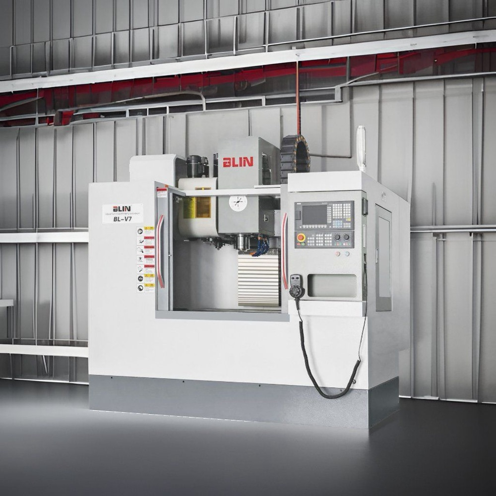

Фрезерный станок с ЧПУ выбирают под размеры деталей, материалы и тип обработки. Ошибка в рабочей зоне или шпинделе потом не исправляется, поэтому важно сначала определить задачи, а уже затем сравнивать модели.
1. Определите задачи
Составьте список деталей: габариты и масса заготовки, материалы (сталь, алюминий, пластик, закалённые стали), типы операций (плоскости, карманы, 3D-поверхности, отверстия) и размер партий. Это основа для выбора размеров станка, шпинделя и осей.
2. Рабочая зона и стол
Проверьте ход по осям X, Y и Z и размер стола, а также допустимую нагрузку на стол. Закладывайте место под тиски, приспособления и инструмент: заготовка занимает не весь ход. Например, у BL-V7 стол 900×400 мм с нагрузкой 300 кг и ходы 720/450/470 мм, а у BL-V8 стол 1000×550 мм, нагрузка 700 кг и ходы 800/550/550 мм.
3. Тип станка
- Вертикальные обрабатывающие центры самые распространённые: подходят для плит, корпусов и форм.
- Горизонтальные центры лучше отводят стружку и удобны для серийной обработки корпусных деталей, обычно с поворотным столом или палетами.
- Портальные станки нужны для крупных деталей и плит.
- Пятиосевые станки обрабатывают сложные поверхности и позволяют работать с нескольких сторон за одну установку.
4. Шпиндель
- Конус (BT30, BT40, BT50, HSK и другие). Больший конус жёстче и подходит для тяжёлой обработки, меньший (например, BT30) даёт быструю смену и высокие обороты на лёгких операциях.
- Частота вращения. Для стали достаточно умеренных оборотов, алюминий и формы выигрывают от высоких. У станка может быть несколько вариантов шпинделя (например, 8000, 10 000 или 12 000 об/мин).
- Привод. Ременный привод обычно даёт больший крутящий момент на низких оборотах, шпиндель с прямым приводом позволяет достигать более высоких оборотов.
- Мощность и крутящий момент. Выбирайте под самые тяжёлые операции, а не под среднюю нагрузку.
5. Инструментальный магазин
Число позиций (например, 16 или 24) определяет, сколько инструмента можно держать в станке без перенастройки. Важны также время смены инструмента, максимальные масса и размеры инструмента. Чем больше деталей и операций, тем полезнее большой магазин.
6. Число осей
Три оси подходят для большинства плит и корпусов. Четвёртая ось (поворотный стол) нужна для обработки с нескольких сторон, пятая для сложных поверхностей. Больше осей значит выше стоимость, сложнее программирование и требования к CAM-системе.
7. Точность и жёсткость
Обращайте внимание на тип направляющих (линейные роликовые или коробчатые для тяжёлого резания), массу станка и жёсткость станины. Паспортная точность позиционирования (например, ±0,005 мм) не равна точности готовой детали: она зависит от инструмента, оснастки, режимов и температуры.
8. Система ЧПУ и программы
Распространены Fanuc, Siemens, Heidenhain и другие системы. Выбирайте ту, с которой справятся ваши операторы, и проверьте, как станок работает с вашей CAM-системой и 3D-моделями.
9. Охлаждение и стружка
Для глубокой обработки полезна подача СОЖ через шпиндель, для длинных серий конвейер стружки и закрытая рабочая зона.
10. Площадка и сервис
- Размеры и масса станка, фундамент, электропитание, подвод воздуха.
- Пусконаладка и обучение персонала.
- Запасные части, гарантийный и постгарантийный ремонт (подробнее о нашем сервисе).
Частые ошибки при выборе
- Не оставляют запас в рабочей зоне под оснастку и берут станок «впритык» по ходам.
- Выбирают шпиндель, не подходящий для основного материала.
- Не учитывают стоимость инструмента, оснастки и CAM-системы.
- Выбирают систему ЧПУ, к которой нет специалистов и обучения.
Что подготовить для подбора станка
- Модели или чертежи типовых деталей.
- Материалы, габариты и массу заготовок.
- Требования к точности и качеству поверхности.
- Объём работы в месяц и пожелания по автоматизации.
Напишите нам, и мы подберём станок под вашу задачу. Фрезерные центры BLIN с характеристиками описаны на странице «Фрезерные станки».
Значения в статье ориентировочные. Точные параметры уточняйте у производителя конкретной модели.